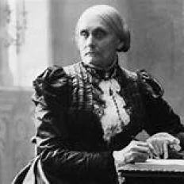
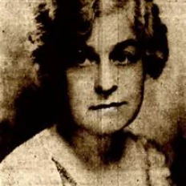
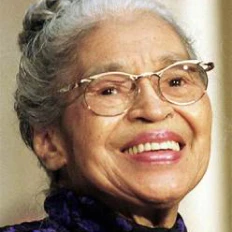
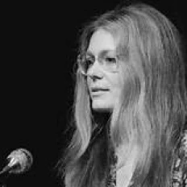
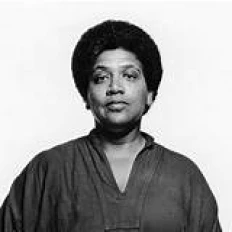
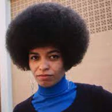
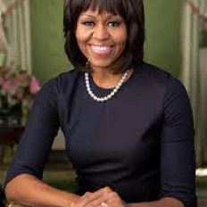
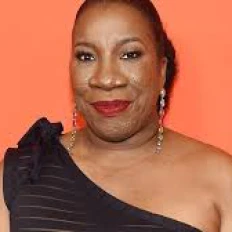

Below is a gallery with important figures of feminism in the United States

was an author and one of the most important figures in the women's rights movement.
She is notably the founding act for women's rights in the United States.
And she organized the Seneca Falls Convention in 1848, the first woman's rights convention in the United States.
She created with Susan B. Anthony the National Woman Suffrage Association

She was an American civil rights activist, she fought for the right to vote for women
in the United States. She created with Elizabeth Cady Stanton the National Woman Suffrage Association.
Throughout her life she gave conferences in the United States and Europe for the rights of women.
She was arrested in 1872 for trying to vote in the presidential election

A former slave on a plantation in Maryland, she is an American activist who fights for the abolition of slavery,
the rights of african-americans and feminist. She is known as "the moise of the black people".

She was the first woman to run for the White House for president in 1872 with
the party she created, the "equal right party". She was also the first woman to speak about women's right
to vote in Congress. Furthermore, she also started a newspaper that talked about love, prostitution and abortion.
Her mindset shocked the most

She was an American author and feminist who fought for women's right to vote.
During her life, she became a leader of the National American Woman Suffrage Association,
then joined the Congressional Union, which later became the National Woman's Party.
She then moved to Paris to write the Biography of George Sand in 1926.

She is an Afro-American who was an emblematic figure of the fight against the segregation of African Americans
in the United States. For this hard battle that she led, she was given a name "mother of the civil rights movement"
Rosa Parks fought against racial segregation with Martin Luther King.
Because of her arrest in 1955 a feminist movement was created which was the boycott of the bus lines.
Women did not take the bus anymore but found other ways to get around.

Is one of the most significant figures in second-wave American feminism, and her activism continues to this day.
In 1971 she founded Ms. Magazine, a liberal women's newspaper that moved away from the sexist narratives of other women's papers at the time.
She has been speaking for many years about the social status of women.

She was an African-American, lesbian author who fought throughout her life for the rights of women, blacks and homosexuals.
She published poems, including her first in Seventeen magazine when she was still in high school and continued to write poems throughout her life.
She worked for the Women's Institute for Freedom of the Press in the 1970s. Her most notable book is The Cancer Journals,
which describes her experience with breast cancer.

She is an African-American woman. In the 70s she joined the extreme left movement called the Black Panther and the Communist Party.
She was arrested in 1970 following a failed hostage situation. According to her there is a need for an intersectional feminism
with the integration of other discriminating factors other than gender such as ethnicity, sexual identity etc..

She is the former first lady of the United States during the mandates of Barack Obama,
even after leaving the White House she continued her fight for the defense of women, nutrition etc. ...
She released a memoir that speaks of her career and she wants women to be inspired.

It is an African-American woman who initiated the MeToo movement in 2006,
which is now used by stars to denounce sexual abuse in Hollywood and in other sectors

She is an actress, literary critic, producer and television host.
She is very engaged like when she created an association in South Africa for the education of little girls.